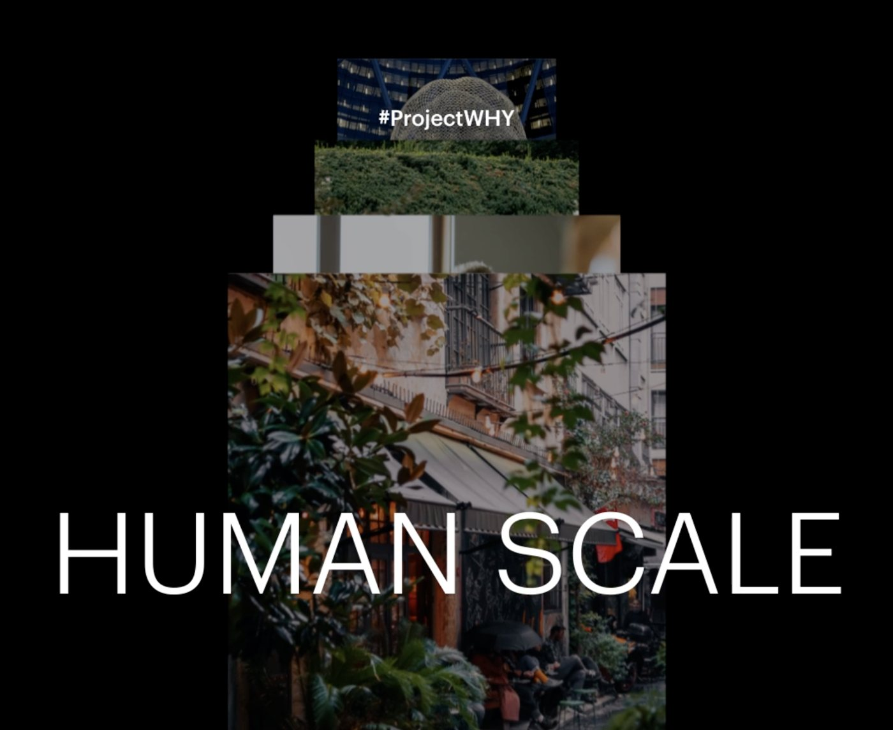
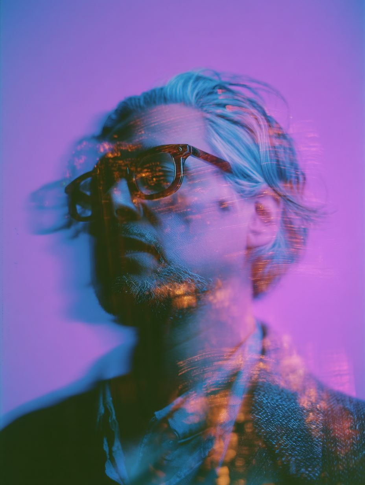
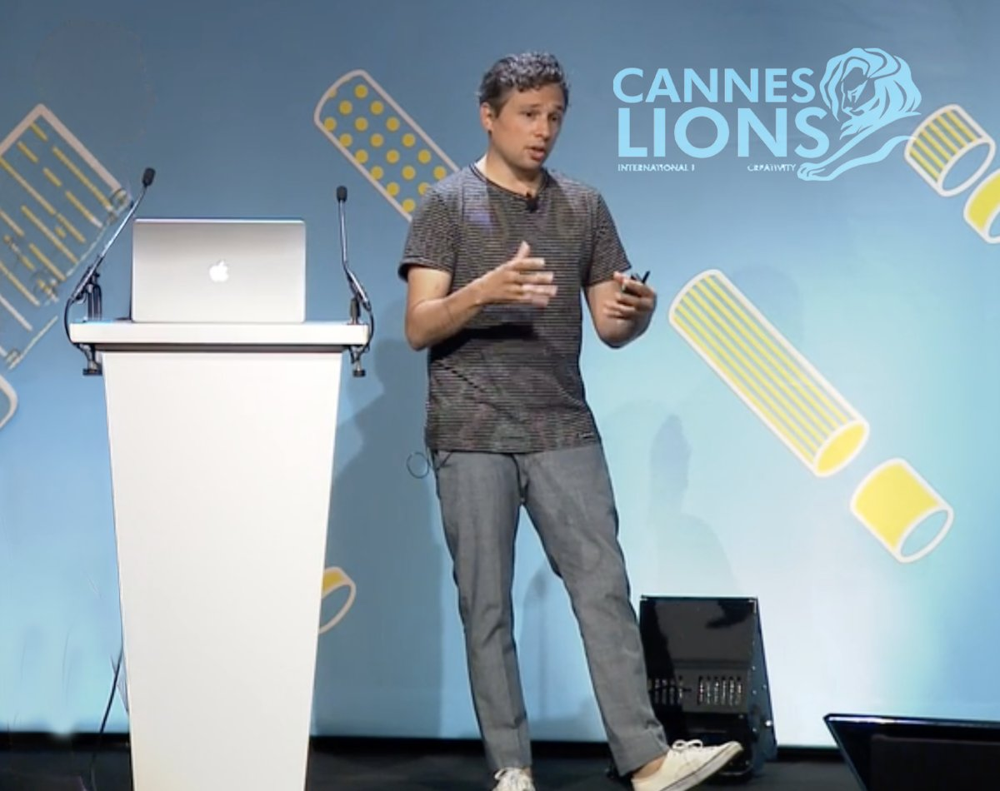
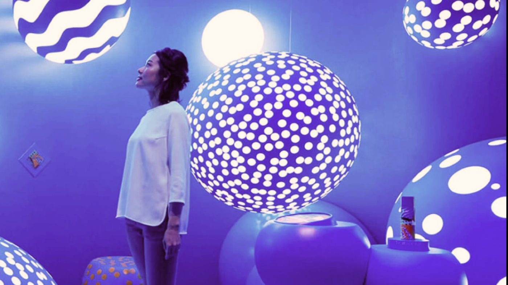
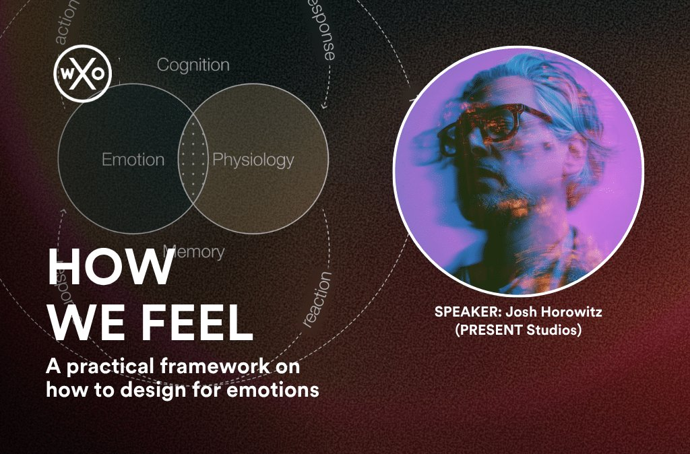
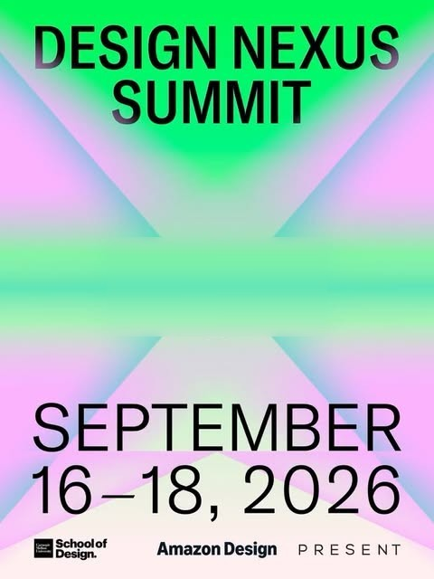
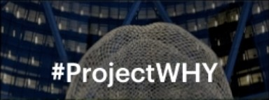
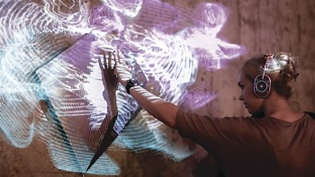

Collaboration · HKS Architects
Project Why
Helping build Project Why with HKS Architects.
hksinc.com/project-why ↗
I design embodied environments where architecture, technology and story work as a single system: responsive and adaptive spaces that elicit aesthetic moments.
For more than fifteen years I have led teams that sit where art, engineering and commerce meet. I began by building an award-winning experiential studio and brought it into The New York Times. Since then I've advised sovereign programmes on the museums and districts of the next decade. My job is to hold the whole stack in one frame, from building infrastructure and sensing networks down to the moment a visitor reaches out, converting passive audiences to active participants.
Underneath the work is a conviction borrowed from neuroaesthetics: beauty is not decoration but a physiological event. Light, proportion, rhythm and surprise change how we breathe, remember and belong. I design for that response on purpose, prioritising how we design for actions over objects.
Spatial, technical and creative layers designed as one problem, from strategy and concept to build and long-term operation.
Sensing, real-time media, AI and custom hardware used as expressive material, not spectacle for its own sake.
Evidence about perception, emotion and attention, applied to the way light, sound, material and motion reach the body.

Helping build Project Why with HKS Architects.
hksinc.com/project-why ↗
On the collision of art, technology and brand, and why the strongest campaigns are ones people can walk into.

Experience as a system that unfolds before, during and after: neuroaesthetics and full-stack design as emotional architecture.

A practical framework for working deliberately with emotion, cognition and sensation, and measuring whether an experience lands.
How immersive and intelligent systems can carry living culture forward without flattening it.

Co-chairing the School of Design's Nexus programme, connecting students, faculty and alumni with the wider field of design, on campus and in cities around the world.
On building, selling and leaving, and the discipline of knowing when a chapter is complete.
Emotion is not an accident. It is a design material.— Josh Horowitz · How We Feel, WXO
Experience architecture across the full lifecycle of a place: research, strategy, design, technology and operations for cultural institutions, retail, hospitality and city-scale development.
US · Middle East · EuropeIn Creative Technology Sprints in the School of Design, students take real briefs from concept to working prototype in weeks, not semesters.
School of Design · Pittsburgh
CollaborationHelping build Project Why with HKS Architects.
hksinc.com/project-why ↗Special Consultant to the Public Investment Fund of Saudi Arabia under QSAS, building innovation labs and product ramps for the next generation of immersive cultural space.
Kingdom of Saudi Arabia
“A New York-based experiential agency is breaking the mold by creating installations for brands.” Profile by Carey Dunne.
Read the feature ↗